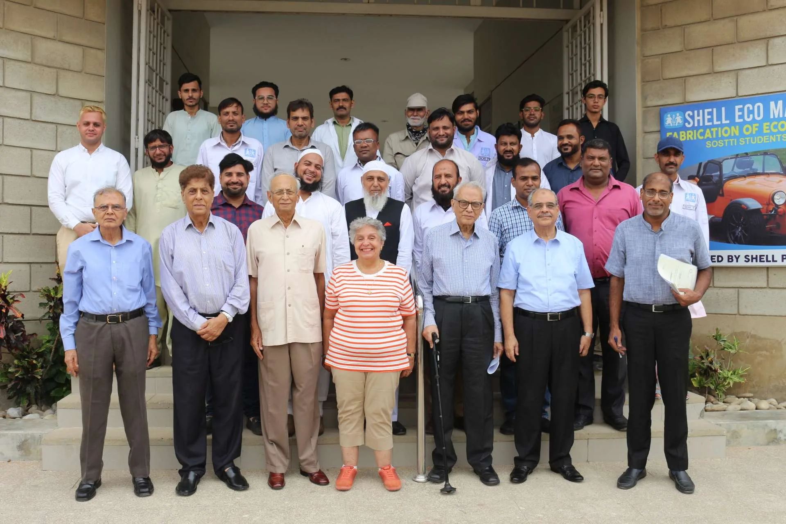

The leadership team guiding SOSTTI toward excellence
SOSTTI is governed by a Managing Committee comprising senior professionals and representatives from SOS Children's Villages Pakistan. The Committee provides strategic oversight, ensures compliance with accreditation standards, and guides the institute toward its mission.
